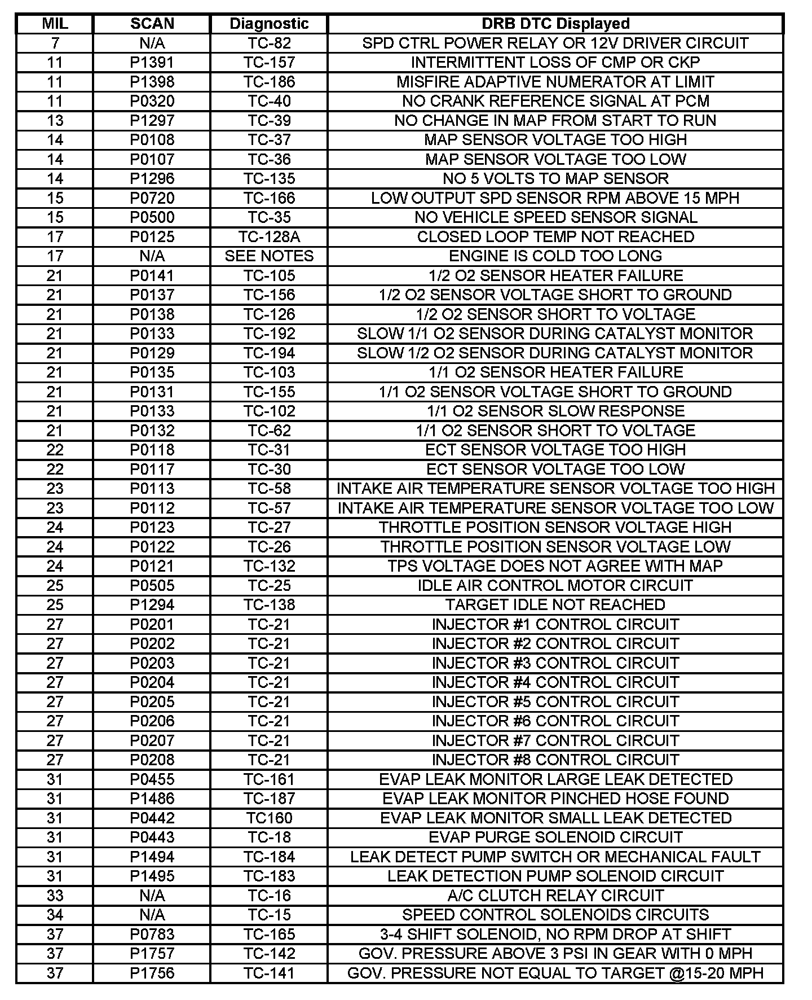
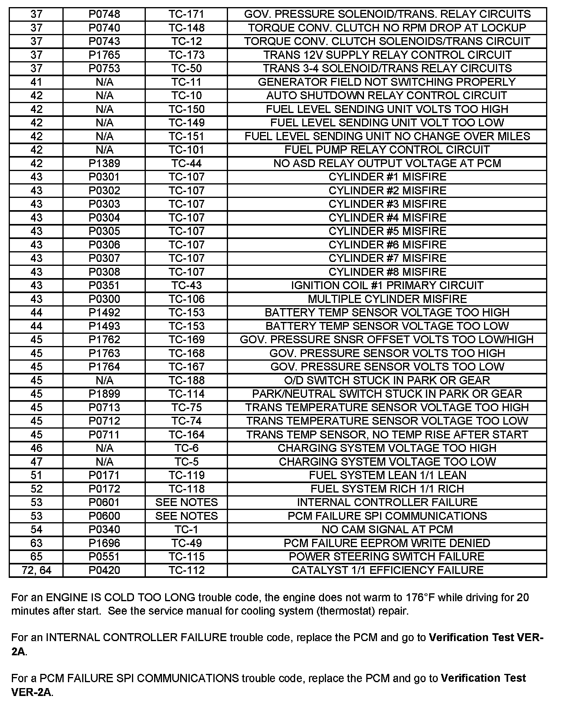
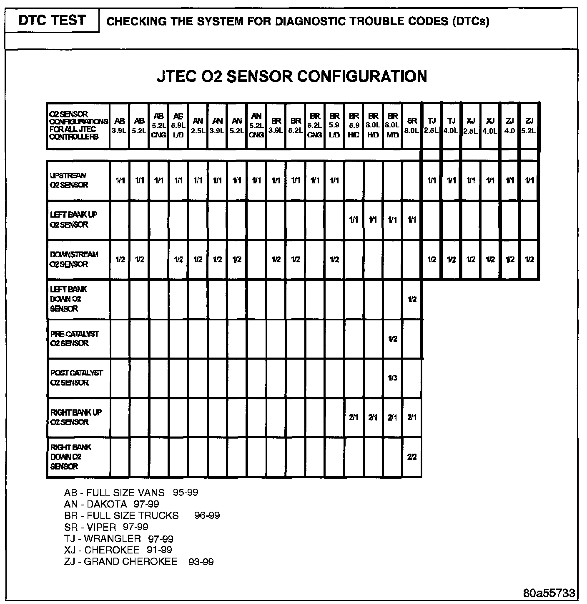
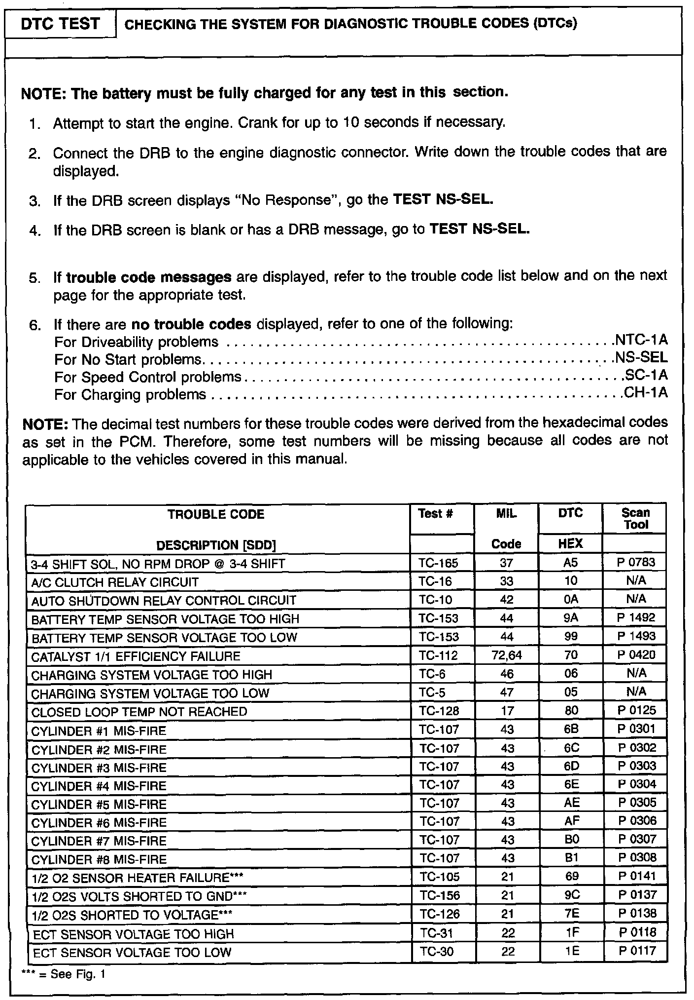
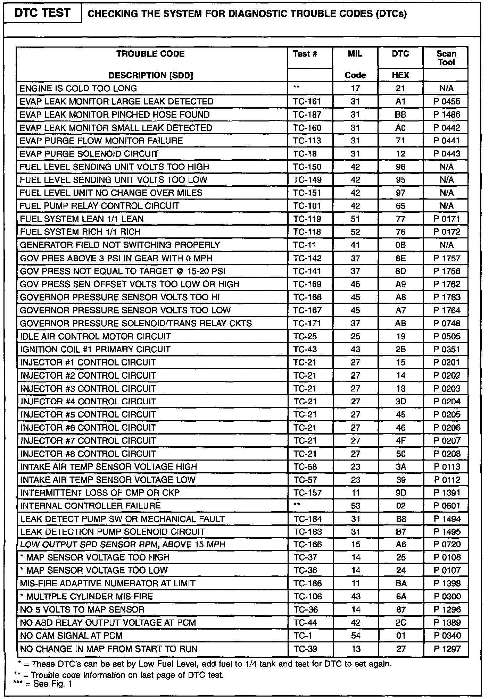
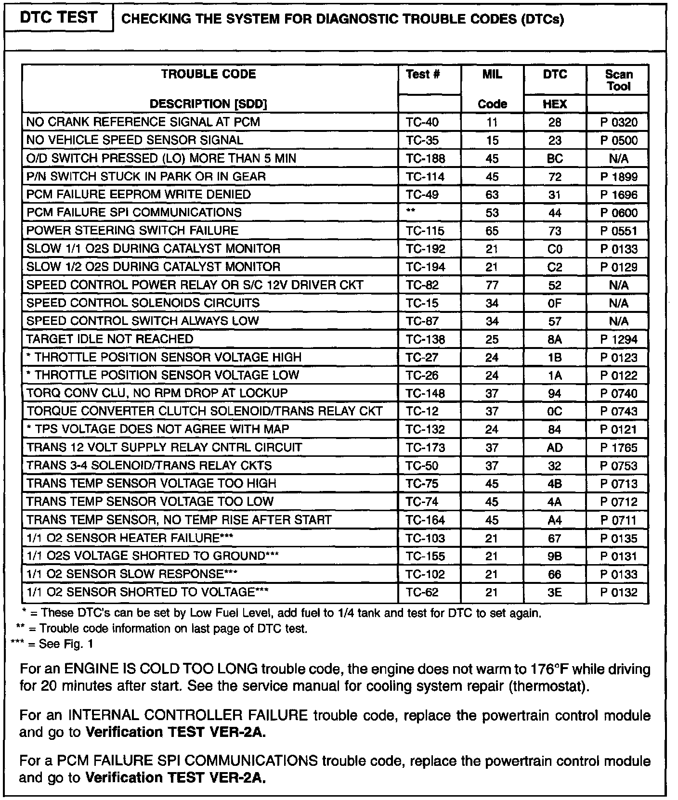

Operation CHARM
: Car repair manuals for everyone.
Русский
Home
>>
Jeep
>>
1997
>>
Grand Cherokee 4WD L6-4.0L VIN S
>>
Repair and Diagnosis
>>
A L L Diagnostic Trouble Codes ( DTC )
>>
Testing and Inspection
>>
Manufacturer Code Charts
>>
Code to Test Chart
>>
2 and 3 Digit Codes
2 and 3 Digit Codes
2 Digit Codes 7 - 37 (For Notes See Last Image):

2 Digit Codes 37 - 72 (Includes Notes):

Oxygen Sensor Configuration:



